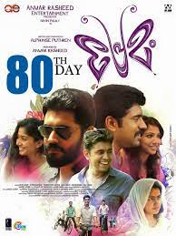
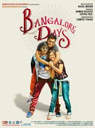

SPOTSTAR - NIVIN PAULY
Nivin Pauly is a celebrated actor in the Malayalam film industry known for his boy-next-door charm and natural acting style. Born on October 11, 1984, he made his acting debut with the film Malarvaadi Arts Club in 2010. He rose to fame with the blockbuster film Thattathin Marayathu, which became a turning point in his career. Over the years, Nivin has built a strong fan base through films like Premam, Bangalore Days, Action Hero Biju, and Jacobinte Swargarajyam. His role in Premam, in particular, made him a household name across South India and even gained him popularity among non-Malayalam audiences. Known for picking relatable and grounded roles, Nivin often portrays characters that resonate with the common man. His performances balance humor, emotion, and intensity, which adds depth to the characters he plays. He is also a successful producer and is actively involved in content-driven cinema. Nivin’s growth from an aspiring actor to a leading star is seen as an inspiring journey by many fans. Despite his fame, he remains approachable and grounded, which adds to his appeal. He continues to evolve as an actor and is seen as one of the most influential figures in modern Malayalam cinema.
POPULAR FILMS


